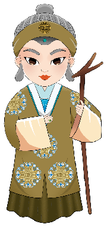
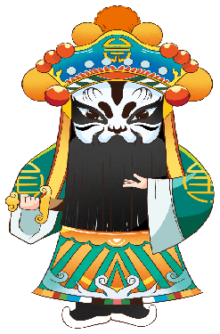

生
生 · 清朗俊雅
多表现男性人物。小生常以清秀扮相、儒雅身段塑造青年书生。
剧种、行当、脸谱、唱腔四个入口，让孩子先喜欢，再理解。
观察服饰、脸谱和动作，再试着模仿人物的神态与身段。
多表现男性人物。小生常以清秀扮相、儒雅身段塑造青年书生。

旦表现女性人物，唱腔与身段细腻，水袖、眼神和圆场都很有韵味。

净俗称花脸，以夸张脸谱和有力动作表现性格豪迈、刚烈的人物。
鼻梁常有一块白粉，表演活泼幽默，也能塑造机智善良的小人物。
脸谱涂一涂
红忠、黑直、白奸、金神秘。
点击开始，听一段示例后选择剧种。
从祥符调、豫西调、豫东调到沙河调，点开代表选段，感受同一剧种里的不同地域声韵。
唱腔古朴醇厚，选段从“这个香囊绣得真好看”切入。
声腔委婉深沉，代表选段为“叫一声贵妃娘娘”。
音调高亢明亮，选段从“可叹你盖世英雄命短寿”展开。
唱腔质朴爽朗，代表选段为“我实服诸葛亮他是奇才”。